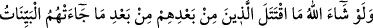
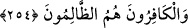

246. Mûsâ’dan sonra, Benî İsrâîl’den ileri gelen kimseleri görmedin mi?
Kendilerine gönderilmiş bir peygambere: “Bize bir hükümdar gönder ki (onun
komutasında) Allah yolunda savaşalım” demişlerdi. “Ya size savaş yazılır da
savaşmazsanız?” dedi. “Yurtlarımızdan çıkarılmış, çocuklarımızdan uzaklaştırılmış
olduğumuz halde Allah yolunda neden savaşmayalım?” dediler. Kendilerine savaş
yazılınca, içlerinden pek azı hariç, geri dönüp kaçtılar. Allah zalimleri iyi bilir.
247. Peygamberleri onlara: Bilin ki Allah, Tâlût’u size hükümdar olarak
gönderdi, dedi. Bunun üzerine: Biz, hükümdarlığa daha lâyık olduğumuz halde,
kendisine servet ve zenginlik yönünde geniş imkânlar verilmemişken o bize nasıl
hükümdar olur? dediler. “Allah sizin üzerinize onu seçti, ilimde ve bedende ona
üstünlük verdi. Allah mülkünü dilediğine verir. Allah her şeyi ihâta eden ve her
şeyi bilendir” dedi.
248. Peygamberleri onlara: Onun hükümdarlığının alâmeti, Tâbût’un size
gelmesidir. Meleklerin taşıdığı o Tâbût’un içinde Rabbinizden size bir ferahlık ve
sükûnet, Mûsâ ve Hârûn hanedanlarının bıraktıklarından bir kalıntı vardır. Eğer
inanmış kimseler iseniz sizin için bunda şüphesiz bir alâmet vardır, dedi.
249. Tâlût askerlerle beraber (cihad için) ayrılınca: Biliniz ki Allah sizi bir
ırmakla imtihan edecek. Kim ondan içerse benden değildir. Eliyle bir avuç içen
müstesna kim ondan içmezse bendendir, dedi. İçlerinden pek azı müstesna hepsi
ırmaktan içtiler. Tâlût ve iman edenler beraberce ırmağı geçince: Bugün bizim
Câlût’a ve askerlerine karşı koyacak hiç gücümüz yoktur, dediler. Allah’ın
huzuruna varacaklarına inananlar: Nice az sayıda bir birlik Allah’ın izniyle çok
sayıdaki birliği yenmiştir. Allah sabredenlerle beraberdir, dediler.
250. Câlût ve askerleriyle savaşa tutuştuklarında: Ey Rabbimiz! Üzerimize sabır
yağdır. Bize cesaret ver ki tutunalım. Kâfir kavme karşı bize yardım et, dediler.
251. Sonunda Allah’ın izniyle onları yendiler. Dâvud da Câlût’u öldürdü. Allah
ona (Dâvud’a) hükümdarlık ve hikmet verdi, dilediği ilimlerden ona öğretti. Eğer
Allah’ın insanlardan bir kısmının kötülüğünü diğerleriyle savması olmasaydı elbette
yeryüzü altüst olurdu. Lâkin Allah, bütün insanlığa karşı lütuf ve kerem sahibidir.